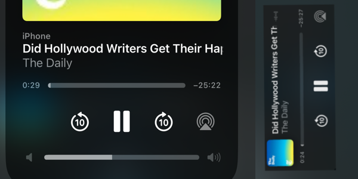

Nailing the MediaSession API on iOS
Safari on iPhone doesn't play well with the MediaSession API, so I tried to fix some of it.

When building rssTea progressive web app, I came across the world of MediaSession APIs. It's an API for providing custom behaviors for standard media playback interactions, which basically means controlling how the media player in the notifications bar of most operating systems will look and work.
The iOS Problem
Setting up the basic media session worked flawlessly on my Mac and Android devices.
caudio = document.getElementById('myAudio');
navigator.mediaSession.metadata = new MediaMetadata({
title: "Audio Title",
artist: "Artist Name",
album: "rssTea",
artwork: [{ src: "artwork.png" }],
});
navigator.mediaSession.setActionHandler("play", () => {
caudio.play();
navigator.mediaSession.playbackState = "playing";
});
navigator.mediaSession.setActionHandler("pause", () => {
caudio.pause();
navigator.mediaSession.playbackState = "paused";
});
navigator.mediaSession.setActionHandler("seekto", (details) => {
if (details.fastSeek && caudio) {
const newTime = details.seekTime || 0;
caudio.currentTime = newTime;
} else if (caudio) {
const currentTime = caudio.currentTime || 0;
const seekTime = details.seekTime || 0;
caudio.currentTime = currentTime + seekTime;
}
});
let skipTime = 30;
navigator.mediaSession.setActionHandler("seekbackward", (evt) => {
caudio.currentTime = Math.max(caudio.currentTime - skipTime, 0);
});
navigator.mediaSession.setActionHandler("seekforward", (evt) => {
caudio.currentTime = Math.min(caudio.currentTime + skipTime, caudio.duration);
});
navigator.mediaSession.setActionHandler(
'nexttrack',
() => { handle playing the next track here );
}
);
navigator.mediaSession.setActionHandler(
'previoustrack',
() => { handle playing the previous track here );
}
);
But iOS...
Well, iOS had its own set of problems. I will list them one by one.
- Artwork won't display in the Notification Center.
- Artwork won't display in the Control Center.
- Album name will not be displayed anywhere.
- Next and previous track buttons will not be displayed.
Fixing the MediaSession on iOS
Fixing the artwork
As I said before, the default artwork provided by the podcast's RSS feed displayed perfectly on every device except iOS. iOS displayed just a grey placeholder box. So I ran some tests.
I used the code provided on MDN web docs as it is to see if size was a problem displaying the artwork on iOS.
if ("mediaSession" in navigator) {
navigator.mediaSession.metadata = new MediaMetadata({
title: "Song title",
artist: "Artist's name",
album: "Some album",
artwork: [
{
src: "https://dummyimage.com/96x96",
sizes: "96x96",
type: "image/png",
},
{
src: "https://dummyimage.com/128x128",
sizes: "128x128",
type: "image/png",
},
{
src: "https://dummyimage.com/192x192",
sizes: "192x192",
type: "image/png",
},
{
src: "https://dummyimage.com/256x256",
sizes: "256x256",
type: "image/png",
},
{
src: "https://dummyimage.com/384x384",
sizes: "384x384",
type: "image/png",
},
{
src: "https://dummyimage.com/512x512",
sizes: "512x512",
type: "image/png",
},
],
});
}
And it worked.
Yes, it did display the 96x96 image in the Notification Center, and unfortunately, the same icon in the Control Center's large preview, which was blurred. So these are the outcomes from my test.
- iOS will only display one size everywhere it needs to display the artwork, almost always the first one.
- The single image that iOS picks will also be displayed in the Control Center preview, albeit blurred.
- Images larger than 128x128 will be replaced by a grey translucent box.
Fixing the Album name
Well, you can't. If you provide a value for artist, the album name will not be shown anywhere on iOS.
Fixing Next and Previous button disappearance
This is not a bug but a feature. If you use setActionHandler to handle seekbackward and seekforward, then the Next and Previous buttons will not be displayed. If you remove these, then your Next and Previous buttons will be back for good.
Conclusion
So I did all these fixes and eventually launched rssTea. You can check the app running here. I hope iOS fixes all these in the next update to the OS or Safari. Specially the artwork issues because the blurry artwork looks hideous in the Control Centre.